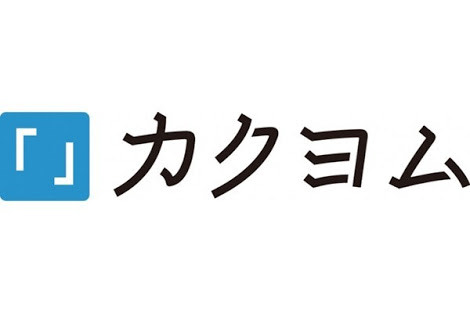
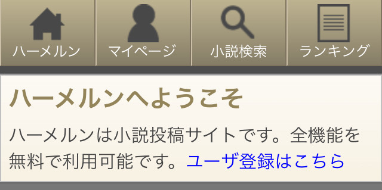

神戸大学漫画研究会の図書館
神戸大学漫画研究会の図書館
勉強会：第2回 小説を書きたい人に向けて
0.概要とはじめに
2020年度会長をやらせていただいているあぽくりふです──が、今回はガバガバ物書きマンとして雑に勉強資料を書かせていただいております。
正直「物を書く」という行為に正解もクソもありゃしないので自分がここで説明しえるモノ、指針として言えるものを概念的に雑に言ってしまえば、要は「最近流行りのなろう系みたいなライトノベル寄りのWeb小説らしきもの(曖昧)を書く人に向けて」のものとなります。
実際、オタクやってたら一度や二度はこういった小説書きたくなることってあるじゃないんですな？僕はあります(迫真)。高校一年生あたりからオタクとして極まって極まった力が溢れたことで物書きにシフトしました。
そんなわけで今回の構成的には、全体として「オタクは小説を書くべき」「書くとしたらどの環境が理想的なのか」といった話をしていきたいと思います。具体的な小説を書く上での注意点、躓く点、改善法なども言っていこうかなとも思いましたが、まあとりあえずは「書くか書かないか」の話の方が優先かなと。
……ぶっちゃけると正直自分もまだ物書き初めて四、五年のぺーぺーでありますがゆえにそこまで言えることないので。本職には勝てなかったよ……(全敗)。
そんなわけでほんへです。
1.オタクは小説を書くべき。
なんか中学生の英作文の日本語訳みてーなタイトルしてんなって感じですけど、まんま個人的な感想です。オタクなら名作アニメやらラノベやら漫画やらを完走して溢れるパトスをどこかにぶつけたくなる事ってありませんか？僕はあります(二度目)。
かといって語り合う相手がいない、でも時間をおいたら冷めてしまう……そんな時こそ文字に出力すればいい。それが“答え”です。
Twitterに雑に「良かった」なんて呟いて終わる、そんな甘いもんじゃないんですよオタクくんは。魂のどこかに火がついちゃうんですよ。それを不完全燃焼のまま放っておくからいけないんです。
例えば漫画のここのページを読んで「ここすき」となった。例えばアニメのこの場面を見て「ここエモい」となった。例えばFate/HFのNine Bullet Revolverの“──ついて来れるか。”以降の文を読んで「流石全盛期きのこ天才か？ というか何をどうやったら“林檎の皮みたいにみっともない”なんて形容出てくるの投影装填とかいう熟語やばすぎはーきのこ節半端ねぇわ今日も祈っとこ」となった。そこが原点なんです。原点にして頂点なんです。クリエイターの着火剤なんですよそれが。
……なんか若干ノイズ混じりましたが気にしたら負けです。要は「ただ消費するだけのオタク」から「何かを創るオタク」になろうぜって事です。とはいえ、はいそうですかと突然絵を描こうなんて気になるかよと言われれば、まあその通りです。
ファンアートなんて描けやしねえ。そもそも漫研で絵が上手いやつやらなんざ軒並み幼少期から絵を描いてただのなんだので根本的に経験値が違う。上手くなるには気が遠くなるような時間がかかる。イラストは経験値こそ全て。今更どうして……。
わかります。超わかります。最初は下手なんもんだと理解していても自分が書いた絵に「え……私って下手すぎ……？」とガン萎えする、よくある話です。やる気そがれますよね。絵心とか元々ねぇよと拗ねたくもなります。
ですが、なんと驚き桃の木山椒の木。ところがどっこい小説なら驚くほど簡単に、コスパよく二次創作なりなんなり出来てしまいます。下地なんていらない。今までの経験値なんてなんぼのもんです。
だって貴方、日本語喋れるじゃないですか。それが全てで、それが答えです。日本語喋れりゃ日本語書ける。日本語書けりゃ小説書ける。そこに何の違いもありゃしないだろうが！ ﾁｶﾞｳﾉﾀﾞ！
……幻聴が聴こえた気がしますがスルーしましょう。いやマジでそのくらい軽く見ていいですよ。正直、小説なんて本当に誰でも書けます。マジです。魔剤ってやつです。
日本語が喋れる。日本語が書ける。なら、書きたいもんをそのまま文章にしちゃいましょうよYou。思い立ったが吉日、今日から貴方は立派なクリエイター。
そもそもWeb小説とかそこらの学生やらニートのオタクが適当に書き殴って晒してるもんなんだから、そりゃ誰だって出来るでしょう。才能なんて必要ない。努力だって必要ない。要るのは『妄想力』です。オタクくん得意でしょ？ なら余裕です。
──かつて寝る前にしていた空想や妄想。オリジナル設定の世界観。自分が主人公の成り上がり展開。
形にしちゃいましょうよ、貴方の世界。
2. とは言ってもどうすればいいか困るよね。
まあ粗雑に推したはいいですが、いきなり小説書けといっても困りますよね。いや書けはするんですよ。でも恥ずかしくて消してしまう。リアル友達には読ませられない。なら投稿しちゃいましょう。
つっても何処に投稿しろと？ という話です。が、個人的には四択になると思います。
●Web小説投稿サイトの大手『小説家になろう』
●近年ラノベの大手から公式に開かれた『カクヨム』
●古き良き『pixiv』
●そして、二次創作専門……ではないですが二次創作書きてえ！ 俺の妄想を読め！と猛者達が集う『ハーメルン』

最後に関しては聞いたことも無い人も多いと思います。
まあ僕も高校になるまで知らなかったのでしょうがないと思います。ただ、間違いなく「小説家としての練度を高める」「二次創作をただ書きたい」「純粋に面白いものを書きたい、そして読みたい」というのであれば、『ハーメルン』がオススメです。
個人の見解ではありますが、真面目に理由を述べさせて貰うとそもそも『小説家になろう』と『カクヨム』は純粋な書き手の市場とは言い難い実情を孕んでいるが故です。
というのも、近年のライトノベル界隈はなろう産が割合を増やしつつある……言い方は悪いですが『幅を利かせ』つつあります。なろう系のアニメも増えましたよね。
要は、投稿された小説のうち幾つかが書籍化され出版されるんです。素人が小説家になれるチャンスなんです。夢はありますよね。しかしそのせいか、非常に<母数が多……まあ言っちゃ悪いですが、似通った設定の小説がものすごーい数あります。
……小説が書籍化するにしても、企業からすれば「ランキング上位」を「売れ筋」だと判断するのは当然です。
そして書籍化を目指すとするなら、その上位層のテーマ……いわば設定をパクればよく読まれるのではないか。そう考えて、設定の一部を流用させて貰う。そこから始まるのが流用のスパイラル。俗に言う『なろうテンプレ』の完成です。
テンプレは食傷気味だけどテンプレを書かなきゃランキング上位にはいけない。ランキングに載らないから読んで貰えない。読んで貰えないのは本末転倒だからテンプレを書く。このループがそこかしこで発生し、テンプレが支配するランキングが完成し、そして初心者物書きさんは「小説を書いても面白くない」が故に脱落してしまう。
まあ散見される様子です。もうこうなったら正直ダメです。小説家になろうは既に凄まじい母数の作品があるのでタイトルからしてテンプレ通りのものでなければ目を通してすら貰えません。横文字、アルファベットのかっこつけたやつなんてもうダメです。目が滑って一読すらされません。それでもと投稿し続けるなら相当な根気と年月がひつようとなるでしょう。大半の人はそこで心が折れてしまいます。
まあ特定の層にわかりやすく説明してしまえば──なろうの現状は「TCGの環境」です。ランキングを席巻するのはテンプレデッキ。多少使うカードは変わりますが根本は変わりません。
時折環境が変遷しますが上位層の使うデッキは変わらず同じテーマです。ただ、当然カードプールの変更なんてありません。クソすぎでは？
まあなろうで上位を狙うなら、純粋な小説家としての腕と言うよりは環境をメタ読みするような小細工が重要だと思います。このタイトルなら目新しくて目に止まるんじゃないか。この内容なら新鮮味があるから高評価が得られるんじゃないか。そんな感じで盤外戦術が横行する世界です。
たまにチーミングして相互に評価入れる人とか現れたり丸パクリされて炎上したりもしてますね。もうやだこの界隈。民度低すぎィ！
……『カクヨム』はそんななろう市場からの脱落者を獲得するために新規の小説市場として開設され、脱なろう系になるかと期待されましたが……あれはもうダメですね。やはりなろうと同じテンプレループの坩堝にハマってしまいました。これからはテンプレが増殖するばかりでしょう。最初期は良かったんですけどね。僕もよく読んでました。
そんなわけで、ここから学べるのは投稿者側としては『一次創作オンリー』で『商業が絡む』小説投稿サイトはダメってことです。本当にお勧めしません。オタクとして歪みますあれ。それでも書籍化ワンチャンを考えるなら……まあ止めはしません。小説家としての登竜門のひとつであることは確かではありますし。
ただ、純粋に創作を楽しみたいのなら別の道を選んだ方がいいかと思いますが。
ならば『pixiv』はどうか。正直悪くは無いと思います。知り合いにpixivで小説を書いてる人は何名かいますし。ただ、あくまで個人の見解ではありますが──『読者の母数』が少ないです。
読む分には問題ないですが、書き手としては中々致命的です。それに書き手側の意見として言わせて貰うと少々システムが悪いです。文字もスマホ版だと全然小さくなりませんし。1ページ一万字くらいは載せてくださいよマジで。
……とまあ、愚痴にはなりましたが最終的な結論としてはやはり『ハーメルン』がおすすめです。
なぜなら、
・二次創作投稿サイトとしては最大規模。
・サイト運営が一般人かつ未だ現役で投稿システムの最適化を行っている。
・今まで読んできた投稿サイトの中で文句無しに一番使いやすい。
・感想を読者が書きやすい。
……などなどあります。
↑
例）検索結果ですが、最近の作品も多く追加されてます。フォントなどの特殊タグ追加が多く、書き手としてはものっそい有難いです。コメントなども再現したぶいちゅっば系も最近増えてるので時代の流れを感じますねえ。
元々『にじファン』と呼ばれる最大手の二次創作サイトが閉鎖するにあたって当時の2ch民の一人が「じゃあ新しい受け皿のサイト作ったるわ！ 使いやすくしてな！」と創設したのが始まりです。そのせいか物凄く使いやすいし見やすいです。UIがいい。いやぁ感謝です。
かくいう僕もそこで書いてます。書いてランキングに載ってたまに調子こいてます。あ、でも検索しちゃダメです。処女作とか読まれたら多分爆発四散して死にます。十五歳の自分を小一時間問い詰めたくなるような駄作が鎮座してますので。
……まあ、苦い黒歴史ではありますがいい薬ではあります。どれだけ恥ずかしくともあれが僕の“原点”ではありますゆえに。たまに読み直して「あああああﾌﾞﾘｭ」とか言いながらのたうち回ってゲロ吐いて魚のように痙攣して死んでますけど。ボケがよ。
そんなわけで今回はここまで。小説を書くとしたら……といった感じのお話でした.
(担当者:あぽくりふ)